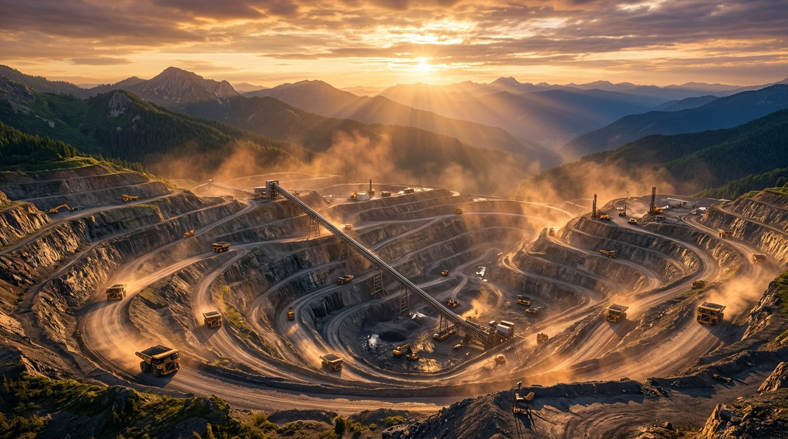
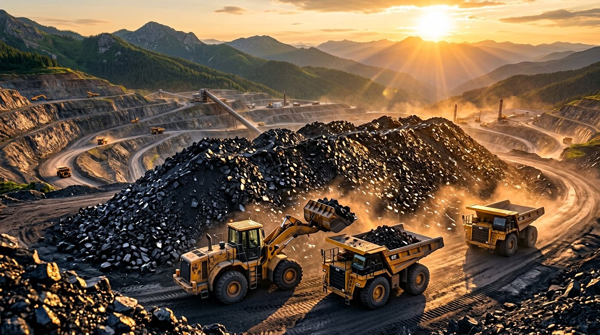
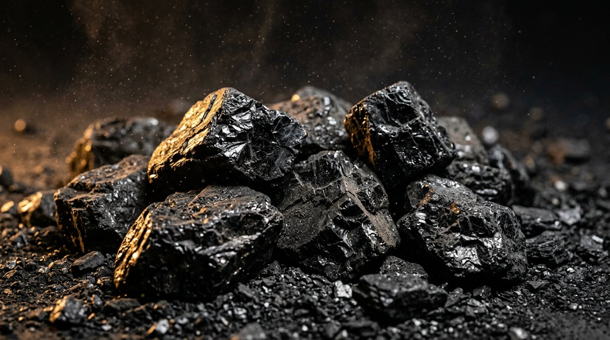
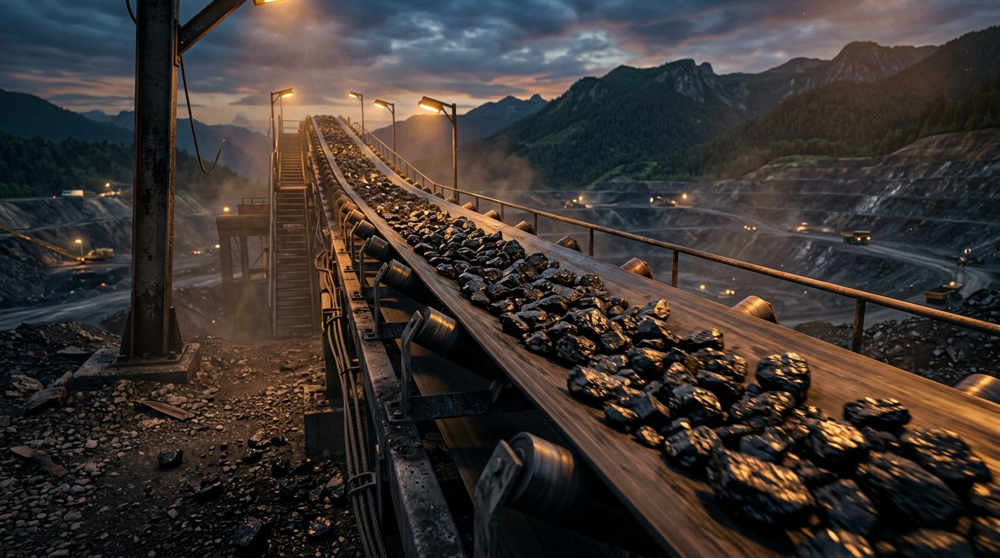
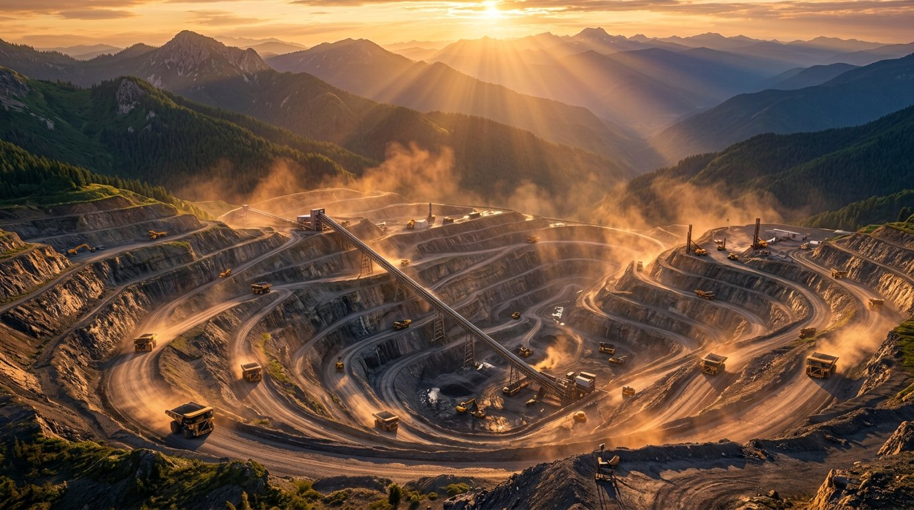

Visual story
The work, in frames.
A visual study of the ground below, the road ahead, and the people who keep Khaqan Coal Company moving.
Place · process · pride
Every load starts somewhere.
High-quality 3D studies of the ground below, the benches, the conveyors, and the material itself.







Motion from the field
Real machines. Real movement.
Short field films of excavation, haulage, and rail — press play to watch the work happen.
Darra Adam Khel · our home
The valley, in real frames.
Photographs from the hills, roads, and mine country that shape Khaqan Coal Company every day.


A company in motion
See operationsGood work leaves a mark on the landscape.
Explore how our operations and community are connected.
From our media library
Fresh from the field.
Photos and short films added by the Khaqan team appear here — updated from the Control Room.
No featured media yet. The team can add photos and videos from the Control Room.